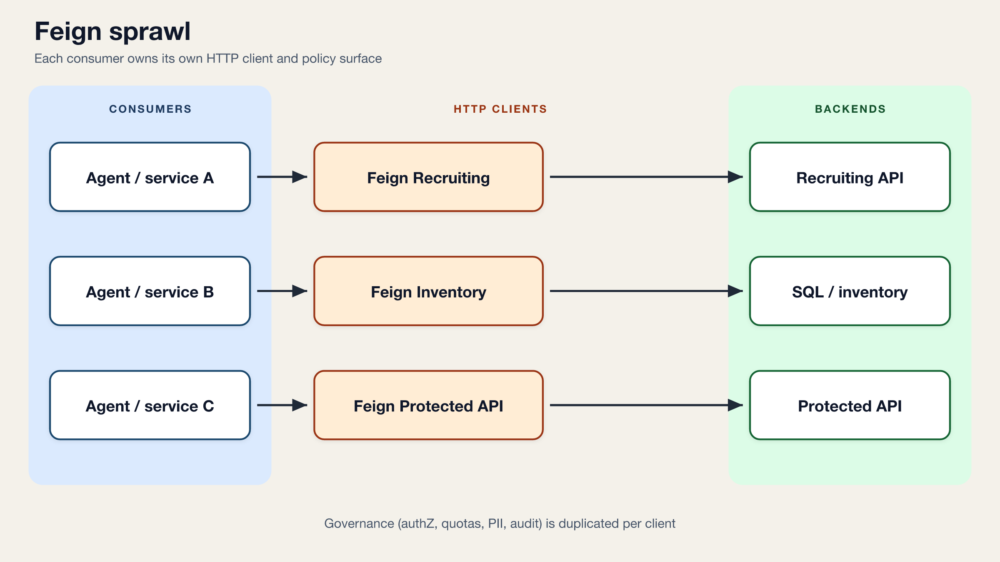
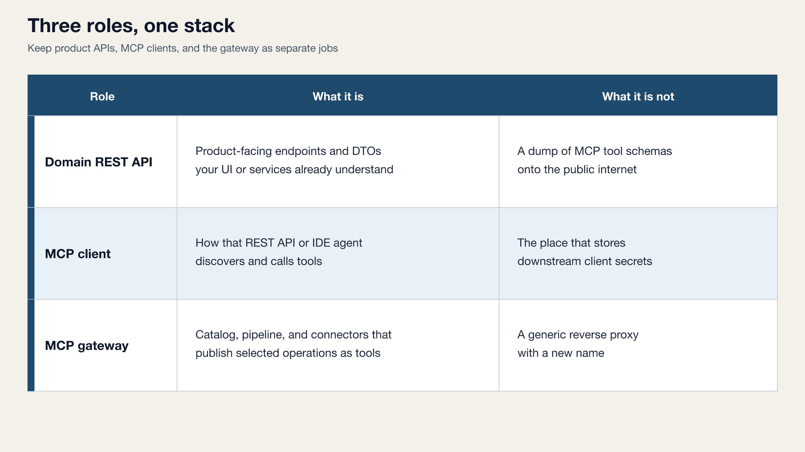
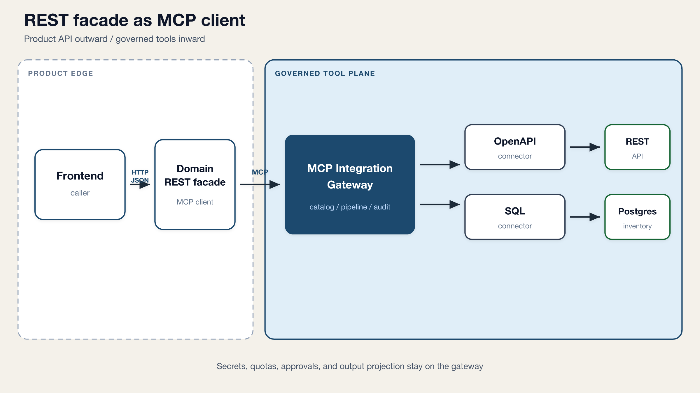
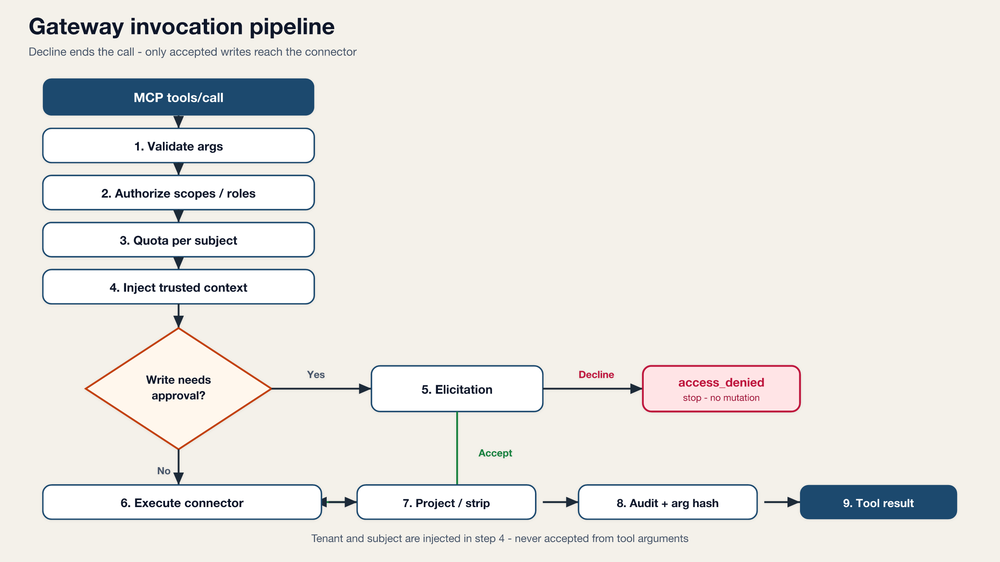
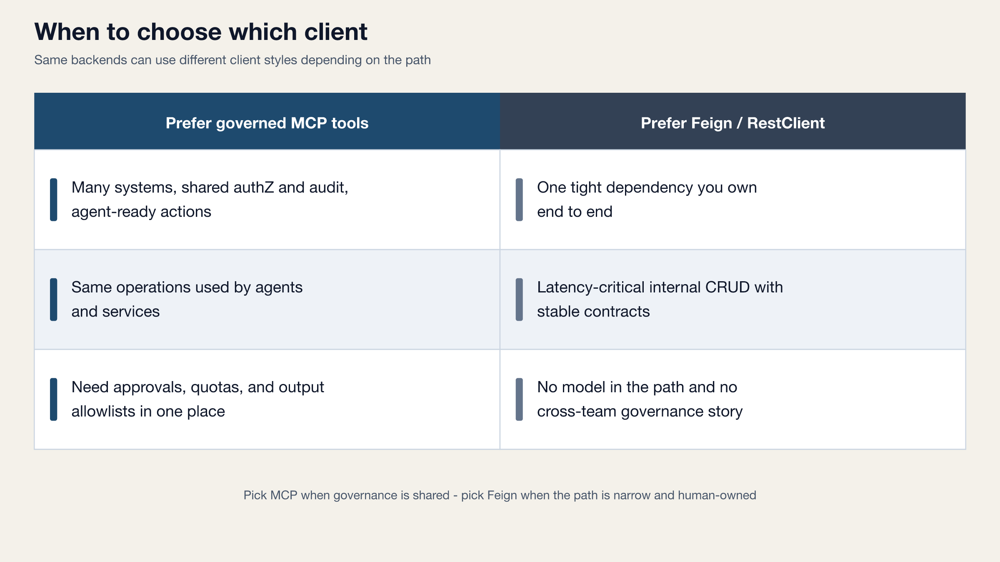

Architecture · Spring · MCP
Stop Giving Agents Your Feign Clients: Govern Tools Behind MCP
Series context. This follows From APIs to Actions and What Spring AI 2.0 Actually Gives You for Transactional Agent Workflows. Those pieces cover why backends should expose actions, and what Spring AI gives you for tools and MCP. This one is about the missing production piece: a governed tool plane.
I stopped wiring recruiting and inventory calls through RestClient-style clients and started calling named MCP tools from a normal Spring REST service.
The hard part was not Model Context Protocol (MCP). It was deciding what the model is never allowed to invent: tenant, identity, and secrets. If every microservice grows its own Feign stack for agent tools, you rebuild governance N times.
The trap: Feign for every “agent integration”
When teams first connect an agent to real systems, the instinct is familiar. Add a Feign or RestClient bean per downstream API. Put bearer tokens in config. Map DTOs. Ship it.
That works for a human-owned service calling a stable partner API. It ages poorly when the caller is a model that can choose arguments, retry creatively, and ask for fields you never meant to expose.
Suddenly you need the same controls in every client: scopes, rate limits, human approval for writes, output allowlists, outbound OAuth, and an audit trail that does not log PII. Feign does not give you that plane. It gives you HTTP stubs.

The thesis
Agents and business services should share the same governed tool plane. Your domain REST app can be an MCP client. Authorization, quotas, approvals, PII projection, trusted context injection, and audit stay in an MCP gateway, not in every Feign client and not in the prompt.
MCP is the integration plane. REST is still the product API. Governance belongs in neither Feign clients nor the prompt.
Three roles, one stack
In the POC I published under java-mcp, the boundaries are explicit:

| Role | What it is | What it is not |
|---|---|---|
| Domain REST API | Product-facing endpoints and DTOs your UI or services already understand | A dump of MCP tool schemas onto the public internet |
| MCP client | How that REST API or IDE agent discovers and calls tools | The place that stores downstream client secrets |
| MCP gateway | Catalog, pipeline, and connectors that publish selected operations as tools | A generic reverse proxy with a new name |
Spring AI 2.0 already gives you MCP client and server transport. The gateway is where you decide which OpenAPI operation or named SQL query becomes a tool, and what happens before and after execution.
Pattern: a REST facade that is an MCP client
Not every caller speaks MCP. Frontends and existing services want HTTP/JSON. So I keep a thin orchestrator: outward REST, inward MCP.

Application code depends on a domain port, not on Feign interfaces for every backend:
interface CandidateSearch {
CandidatePage search(SearchCriteria criteria);
}
// Adapter maps to MCP tool "search_candidates"
// and translates gateway errors into domain exceptions.
In the sample, McpToolGateway wraps Spring AI’s ToolCallbackProvider,
calls named tools with JSON arguments, and unwraps the MCP text payload.
Write tools that need human approval pass an X-Approve header into an elicitation handler.
The orchestrator never holds the protected API’s client secret.
What the gateway owns
Tools are declared in YAML packs: connection, operation, input/output projection, required scopes, quota, and whether the mode is read or write. At runtime, every invocation walks the same pipeline.

Three demo tools make the policy concrete:
-
search_candidates— recruiting search with a tiny demo quota and an output allowlist. Email, phone, and similar fields never leave the gateway as field names the model can latch onto. -
advance_candidate_stage— a write that pauses for human approval through MCP elicitation before the downstream mutation runs. -
secure_ping— outbound OAuth2 client-credentials from the gateway to a protected API. The MCP client only needstools.read; it never sees the token dance.
That last point matters. Machine-to-machine auth to sensitive backends belongs next to the connection definition, not copied into every agent host.
When Feign still wins
I am not arguing that MCP replaces every HTTP client in your estate.

| Prefer governed MCP tools | Prefer Feign / RestClient |
|---|---|
| Many systems, shared authZ and audit, agent-ready actions | One tight dependency you own end to end |
| Same operations used by agents and services | Latency-critical internal CRUD with stable contracts |
| Need approvals, quotas, and output allowlists in one place | No model in the path and no cross-team governance story |
Tradeoffs of the gateway path are real: an extra hop, JSON schemas instead of generated Feign types, and sync REST facades must define what happens when elicitation waits on a human. Those are design choices, not reasons to skip the plane.
Why this showed up while building hiring product surfaces
Building ITJobOpportunities forced the same rule into product form. Résumé text, skills, and job-fit flows sit next to data you must not casually echo into logs or model context. When an assistant can “search candidates” or “advance a stage,” the dangerous part is not the LLM call. It is unbounded arguments, missing tenant binding, and generous response payloads.
A gateway that injects tenant and subject, strips fields, and audits hashes matches how I want agent-shaped hiring features to behave: useful actions, boring controls, no hope-based security in the prompt.
Takeaways
- Treat MCP tools as the shared integration surface; keep domain REST as the product API.
- Put scopes, quotas, approvals, trusted context, output projection, and audit in one gateway pipeline.
- Let a Spring REST service be an MCP client when callers should not speak MCP.
- Keep outbound client-credentials and downstream secrets on the connection, not in every consumer.
- Use Feign where there is no agent path and no shared governance requirement.
Try the POC
The runnable stack lives here: github.com/josalero/learning-with-me/java-mcp. Compose brings up the gateway, demo backends, Postgres, a CLI MCP client, and a REST facade on port 9082. The docs walk through search, quota, approve/decline writes, SQL inventory, and secure ping.
If you are already on Spring AI 2.0 for transactional agent workflows, the next design question is not “can the model call a tool?” It is “who enforces what that tool is allowed to mean?”
Where are you drawing that line today: in Feign interceptors, in each service, or in a shared tool plane?